기능별 도움말
프로필에 저장되는 옵션과 여러 게임이 공유하는 설정을 확인합니다.
메인 화면과 처음 사용하기
상단 프로필에서 게임을 고르면 번역 서비스, 캡처 대상, OCR 상태를 확인할 수 있습니다. 실행 파일 경로를 지정한 프로필에는 게임 실행이 나타납니다. 게임을 연 뒤 번역 시작을 눌러 인식을 켭니다. 자막 설정에서 한국어 번역을 끈 경우 버튼은 원문 인식 시작으로 표시됩니다.
처음 사용하기는 게임 프로필과 언어, 게임 실행과 연결, 대사 영역, 번역 서비스, 번역 시작, 첫 한국어 자막 순서로 안내합니다. 번역 결과가 현재 자막에 표시되면 마지막 단계가 완료됩니다. 취소하거나 안내 창을 닫아도 이미 저장한 설정은 유지됩니다.
마법사 6단계 화면 보기

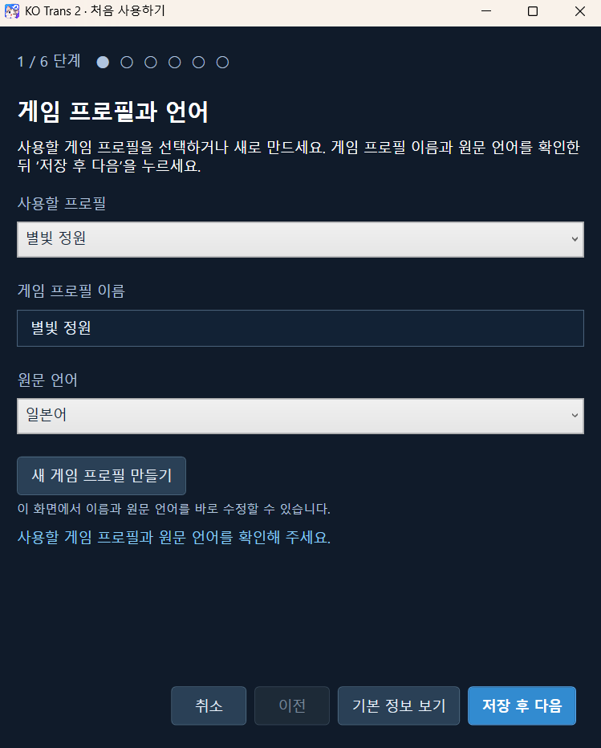

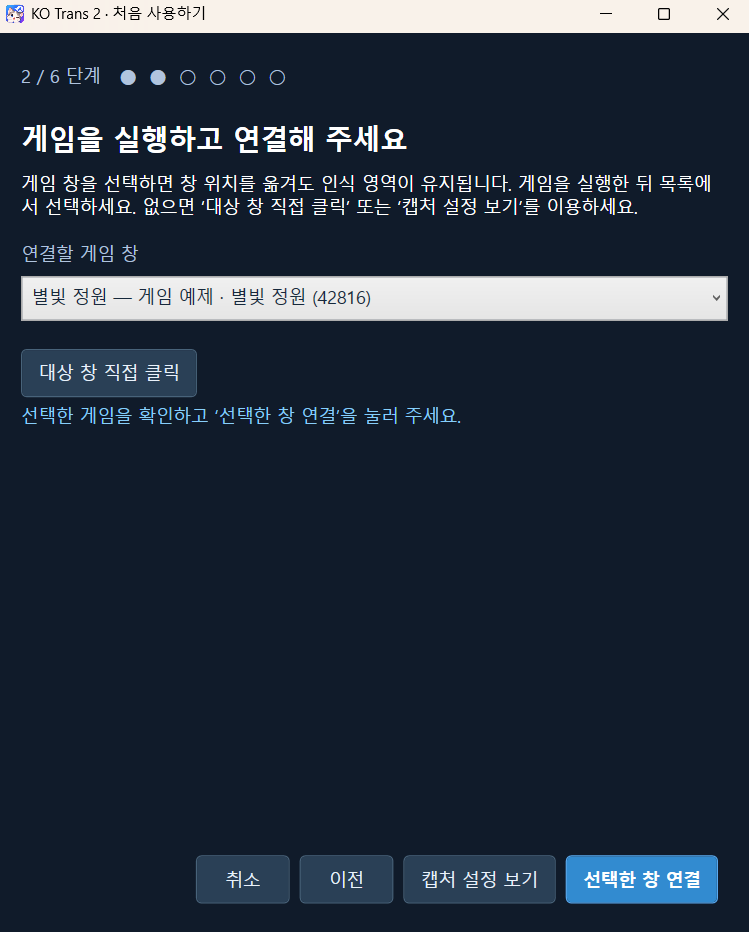

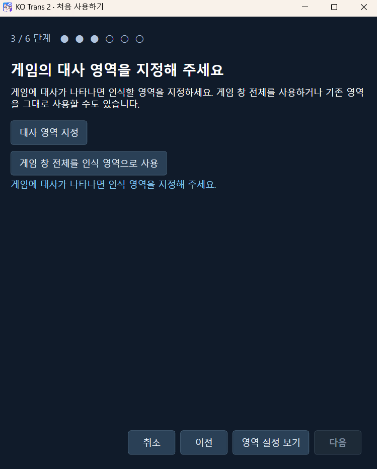

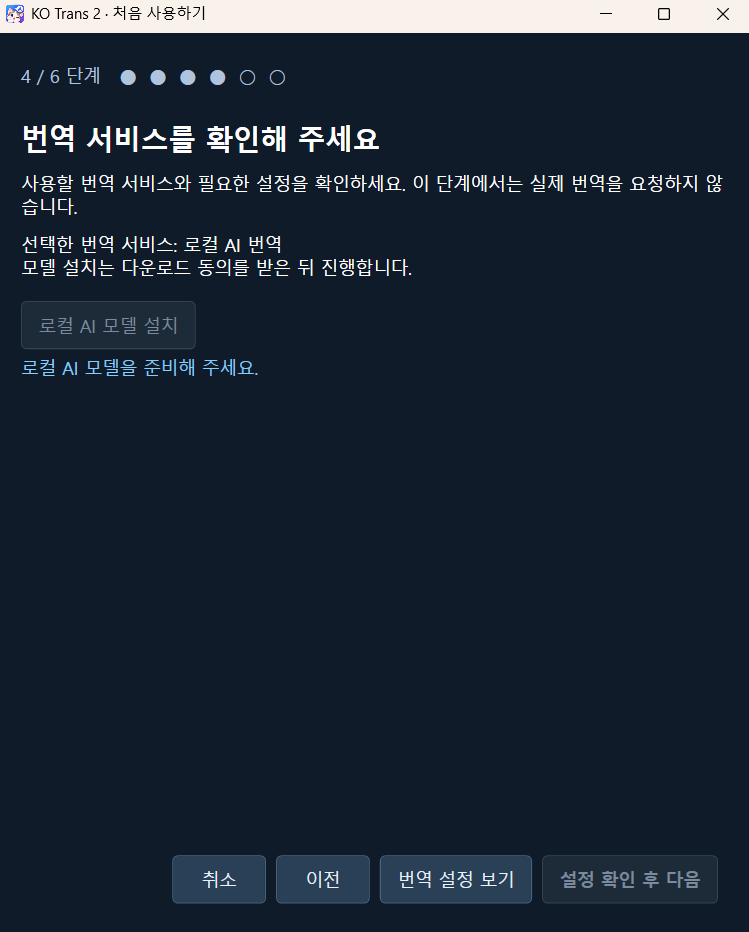

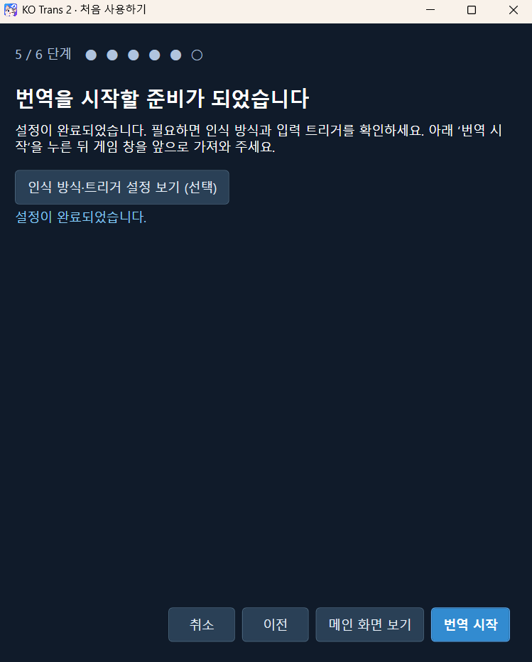

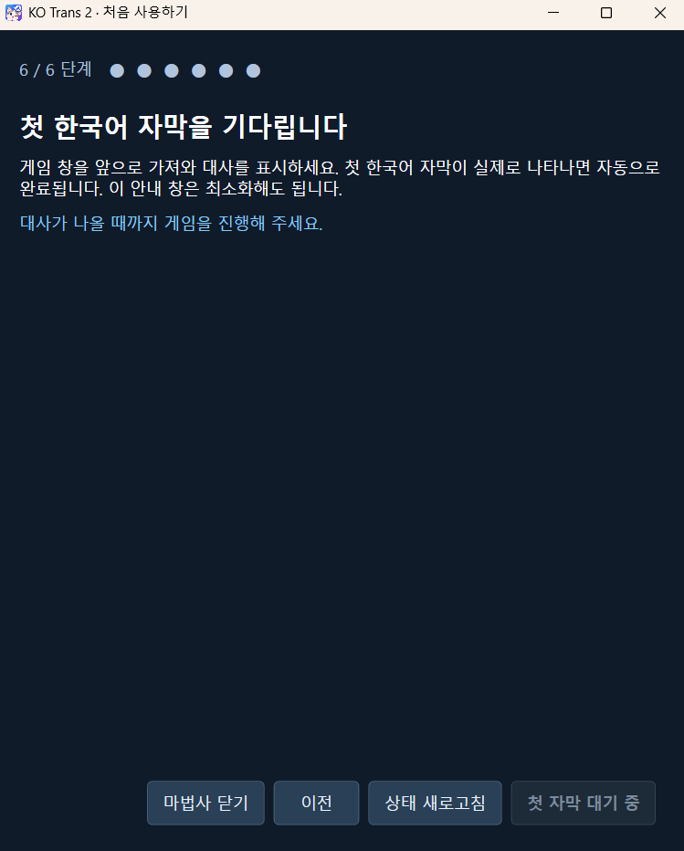
메인 화면을 숨긴 뒤에는 F1 또는 알림 영역 메뉴의 열기를 사용합니다. 알림 영역에서도 현재 모드의 시작·중지와 종료를 선택할 수 있습니다.
기본 정보와 게임 프로필
새로 만들기는 기본 프로필의 게임 설정을 복사합니다. 새 게임의 대상 창과 부분 영역은 따로 지정합니다. 게임 프로필은 이름 변경과 삭제를 사용할 수 있습니다. 같은 이름을 입력하면 뒤에 (2)와 같은 번호가 붙습니다. 기본 프로필은 이름 변경과 삭제가 잠겨 있습니다.
읽기 모드와 일본어
일반 (대사 중심)은 대사 한 묶음이 바뀌는 화면에 적합합니다. 노벨 (본문 중심)은 기존 본문을 유지하면서 새 문장이 아래에 추가되는 화면에 적합합니다. 본문이 교체되거나 페이지가 바뀌면 전체를 다시 확인합니다.
일본어 세로쓰기 · 오른쪽부터와 일본어 원문에 한자 읽기(후리가나) 표시는 일본어 프로필에 표시됩니다. 전자는 OCR 읽기 방향, 후자는 자막에 표시하는 한자 읽기입니다. 알아낼 수 있는 읽기만 표시됩니다.
- 대사 한 묶음씩 바뀜
- 일반 (대사 중심)
- 문장이 아래로 쌓임
- 노벨 (본문 중심)
캡처와 OCR
캡처 대상
- 게임 창은 연결한 창 내부를 기준으로 영역을 저장합니다. 후보가 여러 개이거나 게임의 창 제목이 바뀌면 대상 창 선택으로 다시 연결하세요.
- 화면 영역은 모니터의 고정 좌표를 읽습니다. 게임이나 모니터 배치가 바뀌면 영역을 다시 확인하세요.
- 클립보드는 번역 시작 후 새로 복사된 텍스트를 받습니다. 영역 지정과 OCR 없이 사용할 수 있습니다.
게임 창은 전면에 표시되고 대사 영역이 보일 때 캡처할 수 있습니다. 최소화한 창, 보호 화면, 가려진 부분과 독점 전체화면에는 제한이 있습니다.
OCR 모델 선택
- PaddleOCR v6 Medium은 기본 선택으로 작은 글자와 복잡한 글꼴을 우선합니다.
- PaddleOCR v5는 속도를 우선합니다. PaddleOCR v5 검출 + v6 인식은 v5로 글자 위치를 찾고 v6로 읽습니다.
OCR GPU 가속 사용 (DirectML)은 지원되는 PaddleOCR 구성에서 선택합니다. 기본은 CPU입니다. GPU 사용에 실패하면 CPU로 전환합니다. 모델을 바꾼 뒤 설정 저장을 누르고 다시 시작합니다.

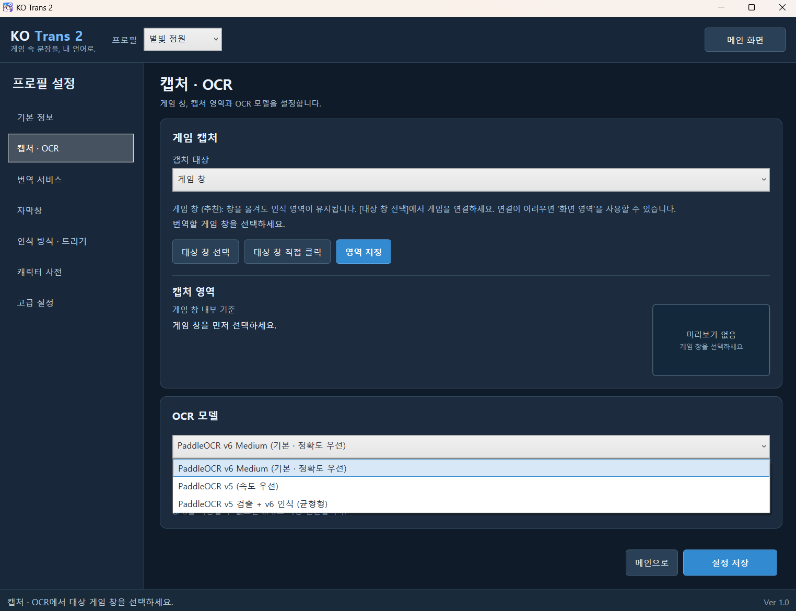

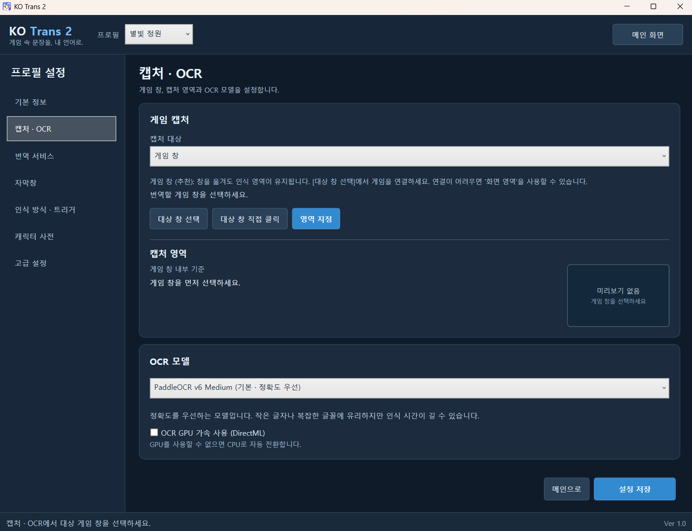

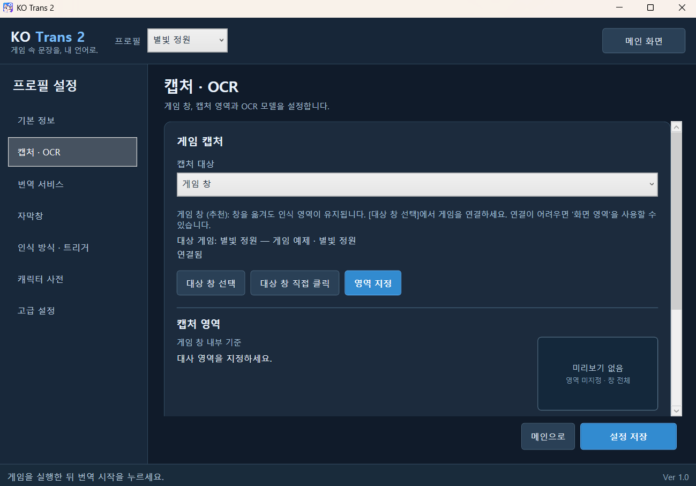
- 기본 OCR
- PaddleOCR v6 Medium · CPU
- 대사가 잘릴 때
- 게임 창에 연결한 뒤 대사 영역을 다시 지정합니다.
번역 서비스와 모델
로컬 AI 번역
표준 Hy-MT2 7B는 약 4.6GB, 경량 1.8B는 약 1.1GB의 모델을 내려받습니다. CPU 실행 전 앱의 여유 메모리 기준은 표준 6GiB, 경량 3GiB입니다. 이 기준을 충족해도 게임을 함께 실행하면 여유 메모리와 속도가 달라질 수 있습니다. GPU 사용이 가능한 환경에서는 GPU로 준비하며, CPU 실행 안내가 나오면 게임과 함께 사용할 자원이 충분한지 확인하세요.
로컬 AI 모델 아래의 모델 관리에서 설치 또는 삭제를 선택합니다. 설치한 모델은 프로필이 공유하고 모델 선택은 프로필별로 저장됩니다. 경량 모델은 복잡한 문장이나 부정·명령의 뜻을 놓칠 수 있습니다.
OpenAI · Gemini · DeepL
번역 제공자에서 원하는 서비스를 고릅니다. OpenAI와 Gemini는 모델 목록에서 검색해 선택하거나 정확한 모델 ID를 입력합니다. 키는 공통 설정에서 등록하고 프로필에서 설정 저장을 누릅니다. DeepL은 번역용이며 문장 해설과 캐릭터 사전을 지원하지 않습니다. 외부 제공자는 네트워크를 사용하고 계정의 요금제·한도에 따라 비용이 발생할 수 있습니다.
Ollama
Ollama 서버를 실행하고 모델을 준비합니다. 기본 서버 주소는 http://localhost:11434입니다. 연결 확인을 누르고 모델 목록에서 설치한 모델을 선택하거나 정확한 모델 ID를 넣습니다. 일반 대화 모델은 Chat, 번역 전용 모델은 해당 TranslateGemma 또는 HY-MT 요청 방식을 선택합니다.

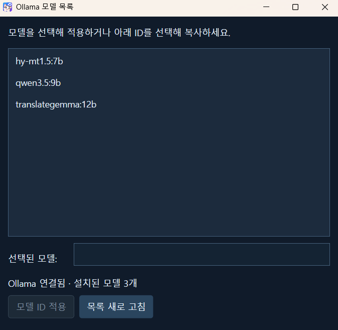
응답 대기 시간 (초)과 모델 유지 시간은 모델별로 저장됩니다. 오래 유지하면 재로딩이 줄고 RAM·VRAM을 계속 사용합니다. 문장 해설에는 JSON 출력을 지원하는 Chat 모델이 필요합니다.
- 기본 제공자·모델
- 로컬 AI 번역 · 표준 Hy-MT2 7B
- 낮은 메모리 사용량
- 경량 Hy-MT2 1.8B. 복잡한 문장의 번역 품질은 표준과 달라질 수 있습니다.
자막창과 단어 사전
프로필 설정 → 자막창에서 자막창 열기로 창을 표시합니다. 한국어 번역과 영어·일본어 원문의 글자 크기와 글자 색상을 각각 정하고 불투명도를 조절합니다. 아래 미리보기에서 읽기 쉬운지 확인하세요. 원문 표시와 한국어 번역 표시는 따로 켜고 끌 수 있습니다.
자막 이동과 도구 모음
게임에 클릭 전달을 켜면 자막창 위를 클릭해도 게임에 전달됩니다. 켠 상태에서는 왼쪽 위 손잡이, 끈 상태에서는 창 내부를 끌어 이동합니다. 테두리와 모서리로 크기를 바꿉니다. 위치·크기·모니터는 게임별로 기억합니다. 자막창의 서비스 버튼으로 메인을 복원할 수 있으며 자막창의 ×를 누르면 인식·자동 번역도 중지됩니다.

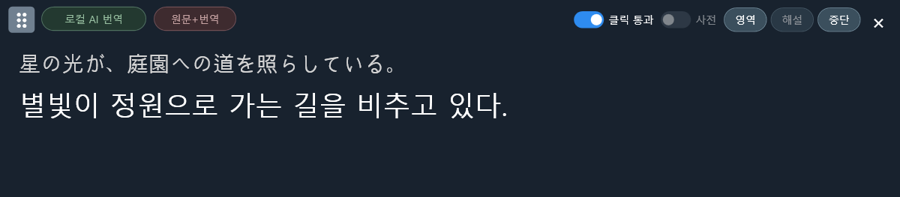
단어 사전
단어를 찾아보려면 게임에 클릭 전달을 끄고 단어 사전을 켭니다. 영어·일본어 원문 단어에 마우스를 올렸다가 클릭하면 Edge 또는 Chrome의 사전 팝업이 열립니다. 단어 사전 설정에서 영어·일본어 주소를 바꿀 수 있습니다. 주소에서 검색어 자리는 %%SS입니다. 기본 사전은 네이버 영한·일한이며 단어를 클릭할 때 온라인 사전에 연결합니다.

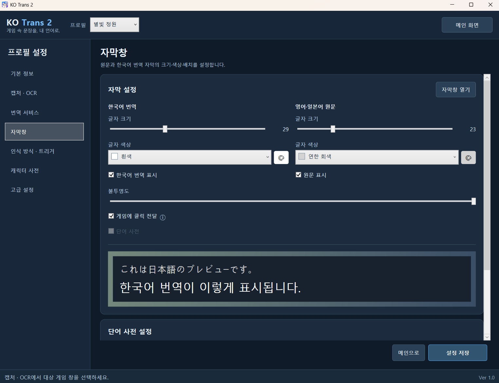

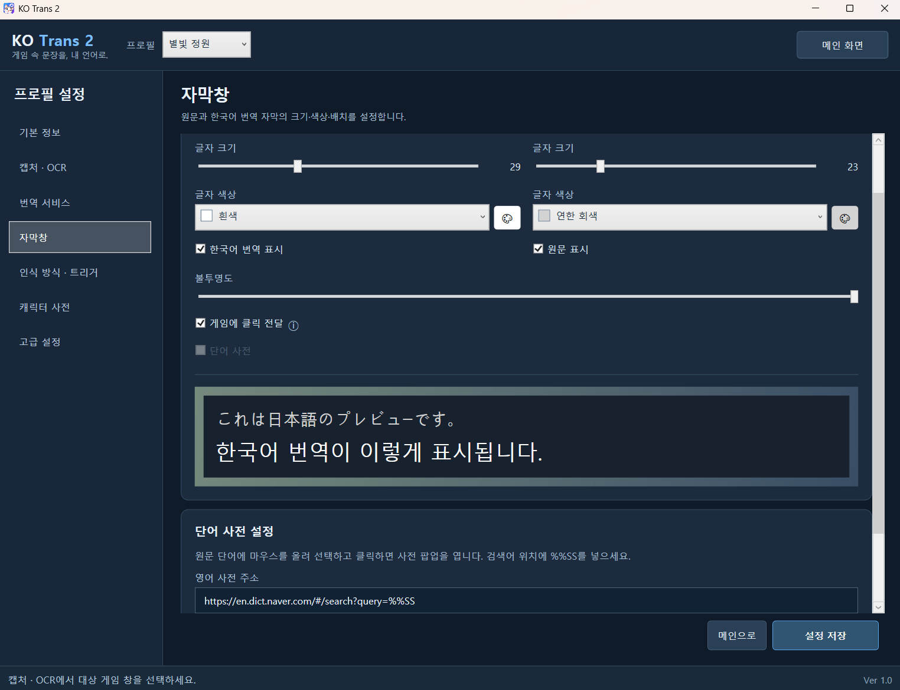
인식 방식과 입력 트리거
화면 자동 인식 사용은 번역 시작부터 게임 화면을 확인합니다. 대사가 자동으로 흐르거나 입력 장치가 일정하지 않을 때 편합니다. 입력 트리거 사용은 지정한 입력 후 화면과 문장이 안정되기를 기다립니다. 대사를 버튼으로 한 번씩 넘기는 게임에 적합합니다.
키보드·마우스·게임패드
- 키보드는 + 키 추가 후 사용할 키를 누릅니다. 마우스는 목록에서 버튼을 선택합니다.
- 게임패드는 + 버튼 추가를 누른 다음 실제 버튼을 눌러 등록합니다. XInput을 지원하며 기본값은 A·B입니다.
- 입력 트리거 후 OCR 대기의 초기값은 0ms입니다. 입력 뒤 게임이 늦게 바뀌면 늘려 보세요. 입력 트리거 모드에서도 문장 안정화는 별도로 진행됩니다.
클립보드는 새 텍스트를 감시합니다. 화면 트리거 설정은 클립보드 감시에 적용되지 않습니다.

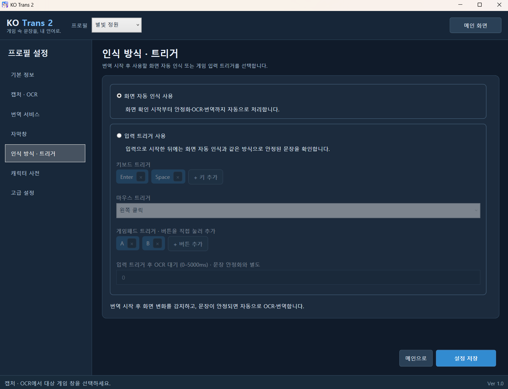
- 기본 방식
- 화면 자동 인식 사용
- 입력 후 대기
- 기본 0ms. 입력 뒤 화면이 늦게 바뀔 때만 늘려 비교합니다.
캐릭터 사전
- 캐릭터 사전 → 캐릭터 사전 사용을 켭니다.
- 사전 선택…에서 캐릭터 사전 내용을 작성한 JSON 파일을 선택합니다. (UTF-8 형식)
- 설정 저장을 누르고 번역을 다시 시작합니다.
JSON 파일 예시
[
{
"name": "佐藤",
"korean_name": "사토",
"description": "주인공의 선배. 차분한 말투."
}
]name은 게임에 표시되는 원문 이름이고 korean_name은 한국어 표기입니다. description은 선택입니다. 256KB 이하, 최대 300명까지 등록할 수 있습니다.
제공자별 적용 범위
Gemini·OpenAI·Ollama Chat은 이름과 설명을 번역에 참고할 수 있습니다. 내장 로컬 AI·Ollama HY-MT는 현재 원문에 나온 이름의 표기를 참고합니다. DeepL과 Ollama TranslateGemma는 캐릭터 사전 지시를 지원하지 않습니다.
AI에게 게임 제목과 위 JSON 형식을 주고 사전 초안을 부탁할 수 있습니다. 공식 한국어 이름을 우선하고, 초반에 공개된 정보만 쓰며 스포일러와 추측을 제외해 달라고 요청하세요. 저장하기 전에 이름과 설명을 확인합니다.

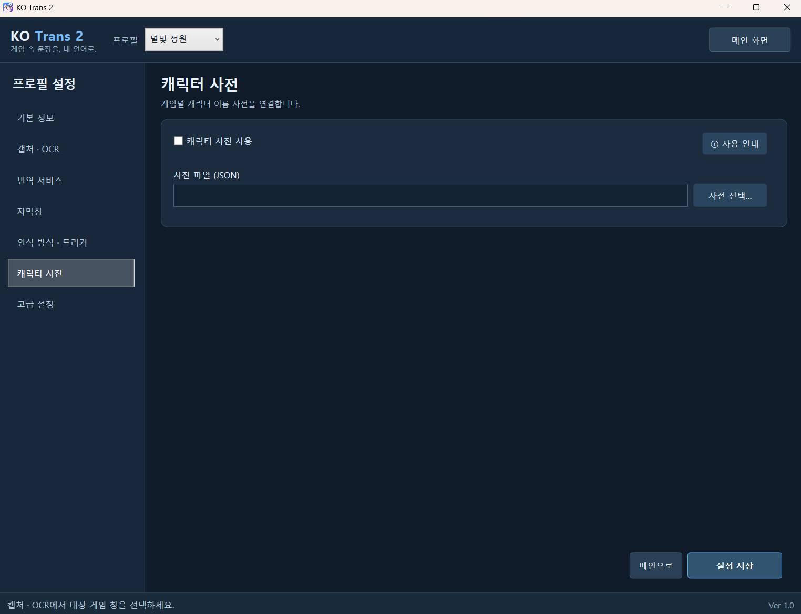
문장 해설과 일본어 읽기
게임에서 해설할 대사가 보일 때 기본 Shift+F2를 누릅니다. 클립보드 모드에서는 누른 순간의 텍스트를 읽습니다. 문장 해설창에서 원문, 전체 해석, 문장 구조·뉘앙스, 어휘와 예문을 읽을 수 있습니다. 번역을 먼저 켤 필요는 없습니다.

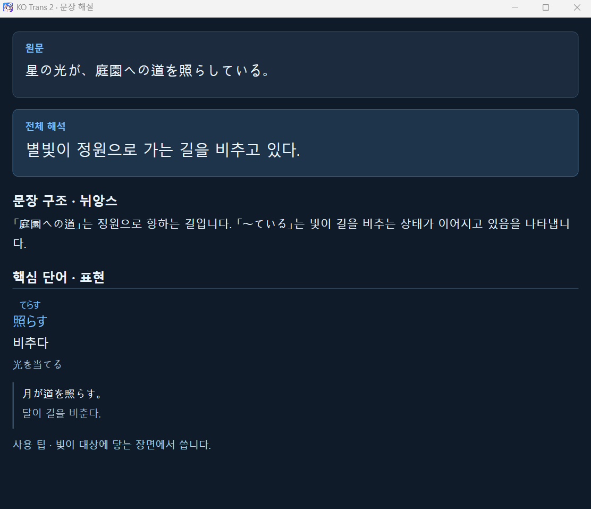
지원 서비스와 단축키
Gemini·OpenAI·호환 Ollama Chat이 문장 해설을 지원합니다. 외부 서비스는 사용량에 따라 비용이 생길 수 있습니다. 학습창은 기본 Shift+PageUp·PageDown으로 스크롤할 수 있습니다. ×로 숨기면 현재 게임 프로필에 창 위치와 크기를 저장합니다.
일본어 읽기
일본어는 로컬 사전으로 확인할 수 있는 한자 읽기를 원문 위에 표시합니다.
공통 설정과 고급 설정
API 키와 전역 단축키
기본 프로필 → 공통 설정 → API 제공자 인증정보에서 제공자를 고르고 키를 입력한 뒤 키 등록/변경을 누릅니다. 게임 프로필에서는 기본 프로필에서 API 키 관리 →를 이용할 수 있습니다. 키는 현재 Windows 계정에서 보호되며 게임 프로필이 공유합니다.
단축키
단축키에서 설정창 표시, 번역 시작·중지, 현재 문장 학습, 학습창 스크롤을 바꿉니다. 변경할 칸을 클릭해 새 조합을 누른 뒤 설정 저장을 누릅니다. 문장 해설창 항상 위도 공통 설정에서 관리합니다.

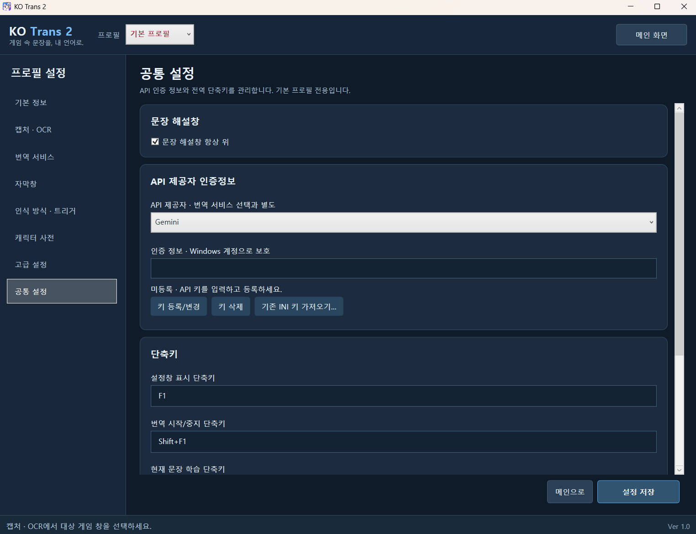

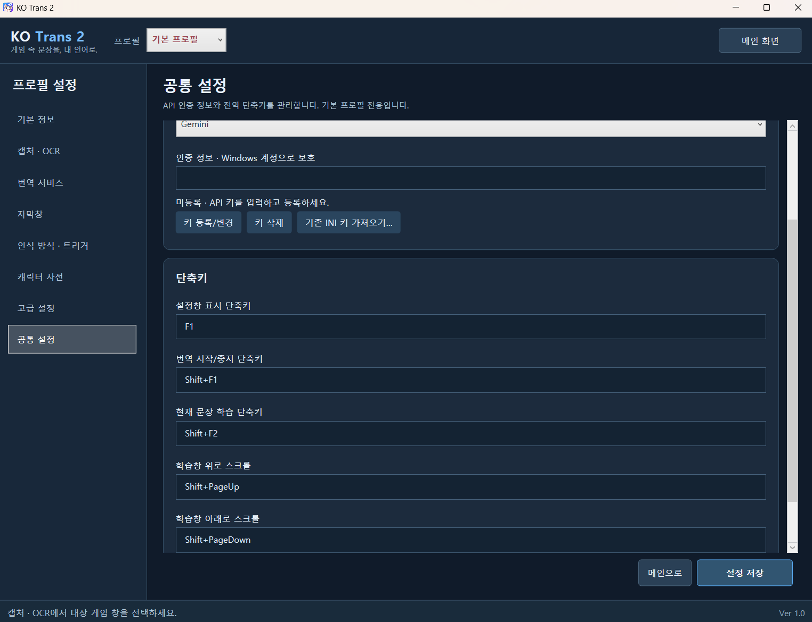
게임별 고급 설정
- OCR 결과 클립보드로 복사를 켜면 안정된 OCR 원문이 클립보드에 복사됩니다. 클립보드를 입력으로 고르는 캡처 모드와는 별개입니다.
- 확대 중 원본 게임 화면 사용은 Magpie로 확대할 때 원본 게임 창의 화면을 사용합니다. Magpie 사용 중 원본이 제대로 인식되지 않으면 끄고 다시 확인하세요.
- 문장 끝 표시 학습 초기화는 지원되는 일본어 가로쓰기 게임 창·PaddleOCR 조합에서 사용합니다. 깜빡이는 문장 끝 표시 때문에 반복 인식되거나 표시가 잘못 처리될 때만 초기화하세요.

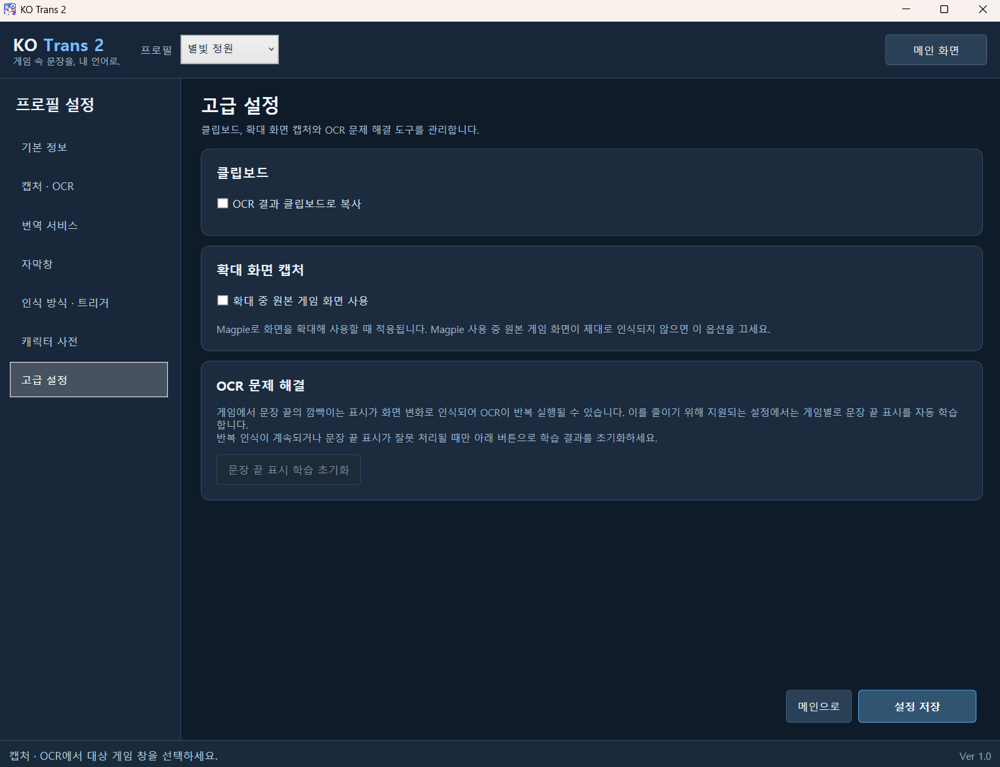